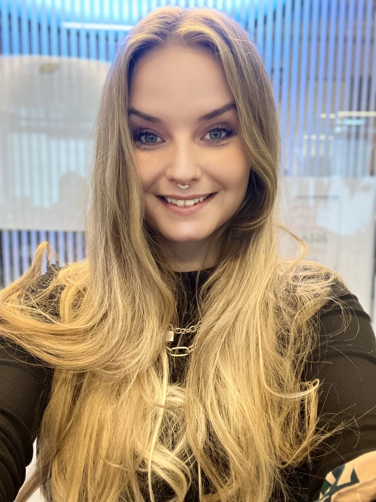

Alt 0M MIG

Jeg hedder Mie, er 29 år kommer fra en stor gård på vestsjælland.
Jeg har tidligere boet i Tyskland i 3 år og taler derfor næsten
flydende tysk. Jeg har sunget hele mit liv og musikken er min store
passion. Jeg er sanger, sangskriver og producer. Multimediedesign
vil jeg bruge til at promovere min egen musik.